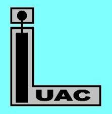

Publications:
- V. R. Singh, A. Dixit, A. Garg, D. C. Agrawal “Effect of Heat Treatment on the Structure and Properties of Chemical Solution Processed Multiferroic BiFeO3 Thin Films”, Appl. Phys. A: Mat. Sci. & Proc., 90, 197, (2008). [Impact Factor: 1.7] doi:
- V. R. Singh, A. Garg, D. C. Agrawal “Structural Changes in Lanthanum Doped Bismuth Ferrite Thin Films” Appl. Phys. Lett. 92, 152905, (2008). [Impact Factor: 3.8] doi:
- V. R. Singh, S. Kar, A. Garg, “Synthesis and characterization of solution processed BiFeO3- PbTiO3 thin films”, In. J. of Engg. and Mat. Sci., 15, 107, (2008). [Impact Factor: 0.6] doi:
- D. Asakura, V. R. Singh ,T. Koide, K. Amemiya, S. Yamamoto, K. Tsuchiya, T. Shioya, T. Kataoka, Y. Yamazaki, Y. Sakamoto, A. Fujimori, T. Taira and M. Yamamoto “Magnetic states of Mn and Co atoms at the Co2MnGe/MgO interfaces: A soft x-ray magnetic circular dichroism study” Phys. Rev. B, 82, 184419, (2010). [Impact factor: 3.7] doi:
- V. R. Singh, Y. Sakamoto, T. Kataoka, Y. Yamazaki, A. Fujimori, F.-H. Chang, D. -J. Huang, H. -J. Lin and C. T. Chen, Y. Yamada, T. Fukumura, M. Kawasaki “Bulk and Surface Magnetization of Co atoms in Rutile Ti1−xCoxO2−δ Thin Films Revealed by X-Ray Magnetic Circular Dichroism” J. of Phys.: Cond. Mat. 23, 176001, (2011). [Impact factor: 2.2] doi:
- Y. Yamazaki, T. Kataoka, V. R. Singh, A. Fujimori, F.-H. Chang, D. -J. Huang, H. -J. Lin and C. T. Chen, K. Ishikawa, K. Zhang, S. Kuroda “Effect of Co-doping of donor and acceptor impurities in the ferromagnetic semiconductor Zn1-xCrxTe studied by soft x-ray magnetic circular dichroism” J. of Phys.: Cond. Mat. 23, 176002, (2011). [Impact Factor: 2.2] doi:
- T. Kataoka, Y. Yamazaki , V. R. Singh, Y. Sakamoto, M. Kobayashi, A. Fujimori, F.-H. Chang, H.-J. Lin, D. J. Huang, C. T. Chen, D. Asakura , T. Koide, Y. Takeda, T. Okane, Y. Saitoh, H. Yamagami, A. Tanaka, M. Kapilashrami, L. Belova and K. V. Rao “Ferromagnetism in ZnO co-doped with Mn and N studied by soft x-ray magnetic circular dichroism”, Appl. Phys. Lett. 99, 132508, (2011). [Impact Factor 3.8] doi:
- T. Kataoka, Y. Yamazaki, V. R. Singh, A. Fujimori, F.-H. Chang, H.-J. Lin, D. J. Huang, C. T. Chen, G. Z. Xing, J. W. Seo, C. Panagopoulos, and T. Wu “Ferromagnetic interaction between Cu ions in the bulk region of Cu-doped ZnO nanowires” Phys. Rev. B. 84, 153203 (2011). [Impact Factor: 3.7] doi:
- T. Kataoka, Y. Sakamoto, V. R. Singh, Y. Yamazaki, A. Fujimori, Y. Takeda, T. Ohkochi, T. Okane, Y. Saitoh, H. Yamagami, and A.Tanaka, “Electronic configuration of Mn ions in the π-d molecular ferromagnet β-Mn phthalocyanine studied by soft X-ray magnetic circular dichroism”, Solid State Commu. 152, 806-809 (2012). [Impact Factor: 1.9] doi:
- V. R. Singh, K. Ishigami, V. K. Verma, G. Shibata, Y. Yamazaki, T. Kataoka, A. Fujimori, F.-H. Chang, D.-J. Huang, H.-J. Lin, C. T. Chen, Y. Yamada, T. Fukumura, and M. Kawasaki “Ferromagnetism of cobalt-doped anatase TiO2 studied by bulk- and surfacesensitive soft x-ray magnetic circular dichroism” Appl. Phys. Lett.100, 242404 (2012). [Impact Factor: 3.8] doi:
- V. R. Singh, V. K. Verma, K. Ishigami, G.Shibata, T. Kadono , A. Fujimori, D. Asakura , T. Koide, Y. Miura , M. Shirai, L.-f. Li, T. Ishikawa and M. Yamamoto “Effects of offstoichiometry on the spin polarization at the Co2Mn𝛽Ge0.38/MgO interfaces: X-ray magnetic circular dichroism study” Phys. Rev. B 86,144412, (2012). [Impact Factor: 3.7] doi:
- T. Kataoka, Y. Yamazaki, V. R. Singh, Y. Sakamoto, K. Ishigami, V. K. Verma, A. Fujimori, F.-H. Chang, H.-J. Lin, D. J. Huang, C. T. Chen, D. Asakura, T. Koide, A. Tanaka, D. Karmakar, S. K. Mandal, T. K. Nath and I. Dasgupta,” X-ray absorption spectroscopy and X-ray magnetic circular dichroism studies of transition-metal-co-doped ZnO nano-particles” e-J. Surf. Sci. Tech. 10, 594 (2012).[Impact Factor:0.6] doi:
- T. Harano, G. Shibata, K. Ishigami, Y. Takashashi, V. K. Verma, V. R. Singh, T. Kadono, A. Fujimori, Y. Takeda, T. Okane, Y. Saitoh, H. Yamagami, T. Koide, H. Yamada, A. Sawa, M. Kawasaki, Y. Tokura, A. Tanaka “Role of doped Ru in coercivity-enhanced La0.6Sr0.4MnO3 thin film studied by x-ray magnetic circular dichroism” Appl. Phys. Lett. 102, 222404, (2013). [Impact Factor: 3.8] doi:
- V. R. Singh, V. K. Verma, K. Ishigami, G. Shibata, Y. Yamazaki, A. Fujimori, Y. Takeda, T. Okane, Y. Saitoh, H. Yamagami, Y. Nakamura, M. Azuma and Y. Shimakawa “Enhanced ferromagnetic moment in Co-doped BiFeO3 thin films studied by soft X-ray circular dichroism” J. Appl. Phys. 114, 103905 (2013). [Impact Factor: 2.2] doi:
- V. K. Verma, V. R. Singh, K. Ishigami G. Shibata, T. Harano, T. Kadono A. Fujimori, F.-H. Chang, H.-J. Lin D.-J. Huang, C. T. Chen, Yi Zhang Jing Liu, Yuanhua Lin, Ce-Wen Nan and A. Tanaka “Origin of enhanced magnetoelectric coupling in BaTiO3/NiFe2O4 multilayers studied by x-ray magnetic circular dichroism” Phys. Rev. B 89, 115128 (2014). [Impact Factor: 3.7] doi:
- G. Shibata, K. Yoshimatsu, E. Sakai, V. R. Singh, V. K. Verma, K. Ishigami, T. Harano, T. Kadono, Y. Takeda, T. Okane, Y. Saitoh, H. Yamagami, A. Sawa, H. Kumigashira, M. Oshima, T. Koide, and A. Fujimori “Thickness-dependent ferromagnetic metal to paramagnetic insulator transition in La0.6Sr0.4MnO3 thin films studied by x-ray magnetic circular dichroism” Phys. Rev. B. 89, 235123 (2014). [Impact Factor: 3.7] doi:
- Y. Takahashi, T. Kadono, S. Yamamoto, V. R. Singh, V. K. Verma, K. Ishigami, G. Shibata, T. Harano, A. Fujimori, Y. Takeda, T. Okane, Y. Saitoh, H. Yamagami, and M. Takano “Orbital magnetic moment and coercivity of SiO2 -coated FePt nanoparticles studied by x-ray magnetic circular dichroisms” Phys. Rev. B 90, 024423 (2014).[Impact Factor: 3.7] doi:
- V. R. Singh, L. Zhang, A. Rajapitamahuni, N. Devries and X. Hong, “Non-linear transport in nanoscale phase separated colossal magnetoresistive oxide thin films” J. Appl. Phys. 116, 033914 (2014).[Impact Factor:2.2] doi:
- L. Zhang, H. Gardner, X. Chen, V. R. Singh and X. Hong, “Strain Induced Modulation of the Correlated Transport in Epitaxial Sm0.5Nd0.5NiO3 Thin Films", J. of Phys.: Cond. Mat. 27,132201 (2015). [Impact Factor: 2.2] doi:
- V. R. Singh, V. K. Verma, K. Ishigami, G. Shibata, A. Fujimori, T. Koide, Y. Miura, M. Shirai, T. Ishikawa, G. f. Li and M. Yamamoto, “Electronic and magnetic properties of off -stoichiometric Co2MnSi/MgO interfaces studied by x-ray magnetic circular dichroism” J. Appl. Phys. 117, 203901 (2015). [Impact factor: 2.2] doi:
- K. Ishigami, K. Yoshimatsu, D. Toyota, M. Takizawa, T. Yoshida, G. Shibata, T. Harano, Y. Takahashi, T. Kadono, V. K. Verma, V. R. Singh, Y. Takeda, T. Okane, Y. Saitoh, H. Yamagami, T. Koide, M. Oshima, H. Kumigashira, and A. Fujimori, “Thickness-dependent magnetic transition and strain-induced orbital magnetic moment in SrRuO3 thin lm studied by X-ray magnetic circular dichroism” Phys. Rev. B 92, 064402 (2015). [Impact Factor: 3.7] doi:
- Vedran Jovic, Jude Laverock, Alexander J. E. Rettie, Jianshi Zhou, C. Buddie Mullins, Vijay Raj Singh, Daniel Wilson, Tilo Söhne, Branislav Jovic and Kevin E. Smith, “Soft X-Ray Spectroscopic Studies of the Electronic Structure in M-BiVO4 (M = Mo or W) Single Crystals” J. of Mats. Chem. A 3, 23743 (2015). [Impact factor: 8.3] doi:
- A. Rajapitamahuni, L. Zhang, M. A. Koten, V. R. Singh, J. D. Burton, E. Y. Tsymbal, J. E. Shield, and X. Hong, “Giant Enhancement of Magnetic Anisotropy in Ultrathin Manganite Films via Nanoscale 1D Periodic Depth Modulation” Phys. Rev. Letts. 116, 187201 (2016).[Impact Factor : 7.6] doi:
- B. Lamoureus, V. R. Singh, V. Jovic, T. Y. Su and K. E. Smith “Structural and Electronic Properties of Thermally Evaporated V2O5 Epitaxial Thin Films” Thin Solid Films 615, 409- 414 (2016).[Impact Factor : 1.9] doi:
- V. Jovic, A. J. E. Rettie, V. R. Singh, J. Zhou, B. Lamoureux, C. Mullins, H. Bluhm, J. Laverock and K. Eugene Smith, “A soft x-ray spectroscopic perspective of electron localization and transport in tungsten doped bismuth vanadate single crystals” Phys. Chem. Chem. Phys 18, 31958 (2016).[Impact Factor: 4.5] doi:
- D. Li, Z. Xiao, H. R. Golgir, L. Jiang, V. R. Singh, K. Keramatnejad, K. E. Smith, X. Hong, L. Jiang, J.-F. Silvain, and Y. Lu, “Large-Area 2D/3D MoS2-MoO2 Heterostructures with Thermally Stable Exciton and Intriguing Electrical Transport Behaviors” Advanced Electronic Materials, 3, 1600335 (2017). [Impact Factor: 10] doi:
- B. Lamoureus, V. Jovic, V. R. Singh, and K. E. Smith, “Orbital orientation mapping of V2O5 thin films” J. Appl. Phys. 122, 045305 (2017). [Impact Factor:2.2] doi:
- V. R. Singh, V. Jovic, I. Valmianski, J. G. Ramirez, B. Lamoureux, I. K. Schuller and K. E. Smith, “Irreversible metal-insulator transition in thin film VO2 induced by soft X-ray irradiation,” Appl. Phys. Lett. 111, 241605 (2017). [Impact Factor: 3.8]
- V. R. Singh, V. Jovic, I. Valmianski, J. G. Ramirez, B. Lamoureux, I. K. Schuller and K. E. Smith, “Effect of Disorder on Vanadium Oxides thin films induced by Soft X-Ray Irradiation: Bulk vs. Surface Properties” J. Appl. Phys. Submitted (12. 2019)
- R. Nongjai, R. Samad, V.R. Singh, V.K. Verma, A. Kandasami, “Magnetic and electronic structures of N implanted iron oxide thin films” J. of Mag. and Mag. Mats. 527, 167703 (2021). [Impact Factor: 2.99] doi:
- P. Kumari, M. Zzaman, S. Jena, M. Kumar, R. R. Bharadwaj, V. K. Verma, R. Shahid, K. Amemiya, and V. R. Singh, “Electronic and Magnetic Properties of Chemical Solution Deposited BiFeO3 Thin Film: a Soft X-ray Magnetic Circular Dichroism Study”, J. of Supercond. and Nov. Mag. 34, 1119 (2021). [Impact Factor: 1.53] doi:
- M. Kumar, V. K. Verma, and V. R. Singh, “Magnetic Anisotropic of Thermally Evaporated FeNi Thin Film: A Soft X-Ray Magnetic Circular Dichroism study”, Surf. Interfac. Ana. 53, 808-813 (2021). [Impact Factor: 1. 7] doi:
- R. Dawn, M. Zzaman, R. R. Bharadwaj, C. Kiran, R. Shahid, V. K. Verma, S. K. Sahoo, K. Amemiya and V. R. Singh, “Direct Evidence to Control the Magnetization in Fe3O4 thin films by N2 Ion Implantation: A Soft X-Ray Magnetic Circular Dichroism Study”, J. Sol-gel Sci. and Tech. 99, 461 (2021). [Impact Factor: 2. 3] doi:
- A. Kumari, A. Kumara, R. Dawn, J. B. Franklin, R. Vinjamuri, S. Kr. Sahoo, U. Kr. Goutam, V. K. Verma, R. Meena, A. Kandasami, S. Mahapatra, K. Kumari, A. Kumar, and V. R. Singh, “Valence band structure of Cr doped VO2 thin films: A resonant photoelectron spectroscopy study” J. of All. and Comp. 895, 162620 (2021). [Impact Factor: 5.3] doi:
- K. R. Nallabala, S.V. P. Vattikuti, V.K. Verma, V.R. Singh, S. Alhammadi, V. K. Kummara, V. Manjunath, M. Dhanalakshmi, V. R. M. Reddy, “Highly sensitive and cost-effective metal-semiconductor-metal asymmetric type Schottky metallization based ultraviolet photodetecting sensors fabricated on n-type GaN” Mats. Sci. in Semicond. Proc. 138, 106297 (2022). [Impact Factor: 3. 9] doi:
- S. Jena, M. Zzaman, V.K. Verma, K. Ishigami, G. Shibata, T. Ishikawa, G. f. Li, M. Yamamoto, R. Shahid, T. Koide, A. Fujimori, and V. R. Singh, Physica B: Phys. Conden. Matt. 627, 413619 (2022). [Impact Factor: 2. 4] doi:
Conference Proceedings/Research Activity Reports/ Book Chapters:
- T. Kataoka, Y. Sakamaki, V. R. Singh, Y. Yamazaki, A. Fujimori, D. Asakura T. Koide, M. Kapilashrami, L. Belova and K. V Rao “Effect of hole doping in ferromagnetic semiconductor Mn-doped ZnO thin films studied by X-ray magnetic Circular dichroism” Photon Factory Activity Report 2008 #26 Part B (2009), KEK-PF Japan.
- V. K. Verma, V. R. Singh, K. Ishigami, G. Shibata, T. Kadono, A. Fujimori, T. Koide, K. Ishikawa, K. Kanazawa and S. Kuroda, “X-ray absorption spectroscopy and x-ray magnetic circular dichroism study of Cr-doped CdMnTe”, Photon Factory Activity Report 2010 #28 Part B (2011), KEK-PF Japan.
- V. R. Singh, V. K. Verma, K. Ishigami, Y. Yamazaki, G. Shibata, T. Kadono, A. Fujimori, T. Koide, T. Ishikawa, L. Gifang, M. Yamamoto, “Magnetic states of Co and Mn at the Co2MnSi/MgO interfaces studied by x-ray absorption spectroscopy and soft x-ray magnetic circular dichroism”, Photon Factory Activity Report 2010 #28 Part B (2011), KEK-PF Japan.
- G. Shibata, K. Ishigami, V. R. Singh, V. K. Verma, T. Kadono, A. Fujimori, T. Koide, K. Yoshimatsu, E. Sakai, H. Kumigashira, M. Oshima, “Thickness dependence of the x-ray magnetic circular dichroism of La0.6Sr0.4MnO3 thin films”, Photon Factory Activity Report 2010 #28 Part B (2011), KEK-PF Japan.
- V. K. Verma, V. R. Singh, K. Ishigami, G. Shibata, T. Harano, T. Kadono, A. Fujimori, F.- H. Chang, H.-J. Lin, D.-J. Huang, C. T. Chen, Yi Zhang, Jing Liu, Yuanhua Lin and Ce-Wen Nan “XMCD study of magnetic oxide thin films and multilayers”, NSRRC Annual Report 2011, NSRRC Taiwan.
- V. K. Verma, V. R. Singh, K. Ishigami, G. Shibata, T. Harano, T. Kadono, A. Fujimori, “Electronic structure and magnetic properties of polycrystalline MnWO4”, Spring8 Annual Report 2011, SPring8 Japan.
- V. R. Singh, V. K. Verma, K. Ishigami, Y. Yamazaki, G. Shibata, A. Fujimori, D. Asakura, T. Koide, T. Ishikawa, M. Yamamoto, “Magnetic states of Co and Mn atoms at the Co2MnGe/MgO interfaces studied by x-ray absorption spectroscopy and soft x-ray magnetic circular dichroism study”, Photon Factory Activity Report 2009 #27 Part B (2010), KEK-PF Japan.
- V. K. Verma, V. R. Singh, K. Ishigami, G. Shibata, T. Harano, T. Kadono, A. Fujimori, T. Koide, K. Ohgushi, Y. Tokura, “X-ray magnetic circular dichroism study of FeCr2S4”, Photon Factory Activity Report 2011 #29 Part B (2012), KEK-PF Japan.
- G. Shibata, K. Ishigami, V. R. Singh, V. K. Verma, T. Kadono, A. Fujimori, T. Koide, K. Yoshimatsu, E. Sakai, H. Kumigashira, M. Oshima, “Thickness dependent metal-insulator transition in ferromagnetic La0.6Sr0.4MnO3 thin films studied by x-ray magnetic circular dichroism” Photon Factory Activity Report 2011 #29 Part B (2012), KEK-PF Japan.
- T. Kadono, V. R. Singh, V. K. Verma, K. Ishigami, G. Shibata, T. Harano, A. Funimori, T. Koide, “XMCD study of spin and orbital states of FePt nano-particles coated by SiO2” Photon Factory Activity Report 2011 #29 Part B (2012), KEK-PF Japan.
- D. Asakura, T. Koide, K. Amamiya, S. yamamoto, K.Tsuchiya, T. Shioya, V. R. Singh, T. Kataoka, Y. Yamazaki, Y. Sakamoto, A. Fujimori, T. Taira, and M. Yamamoto’ “A Soft Xray Magnetic Circular Dichroism Study of Co2MnGe/MgO interface” Photon Factory Activity Report 2009 #27 (2010), KEK-PF Japan.
- V. K. Verma, J. B. Franklin, G. Kim, H. Ohta, V. R. Singh, “Ferromagnetism of V1-xCrxO2 studied soft x-ray magnetic circular dichroism” Photon Factory Activity Report 2019 #37 (2020), KEK-PF Japan.
- A. Kumari, R. Dawn, M. Zzaman, V K. Verma, K. Amemiya, and V. R. Singh, “Magnetic properties of silica coated Fe3O4 nanoparticles using X-ray magnetic circular Dichroism” Photon Factory Activity Report 2020 #38 (2021), KEK-PF Japan.
- M. Zzaman, R. Dawn, A. Kumari, V. K. Verma, K. Amemiya, and V. R. Singh, “Fe3O4 Nanoparticles and their Magnetic Properties using X-Ray Magnetic Circular Dichroism” Photon Factory Activity Report 2020 #38 (2021), KEK-PF Japan.
- M.Zzaman, A. Kumar, R. Dawn, A. Kumari, V K. Verma, K. Amemiya, and V. R. Singh, “Soft X-ray Magnetic Circular Dichroism Study of SrRuO3 thin films” Photon Factory Activity Report 2020 #38 (2021), KEK-PF Japan.
Financial
Support


